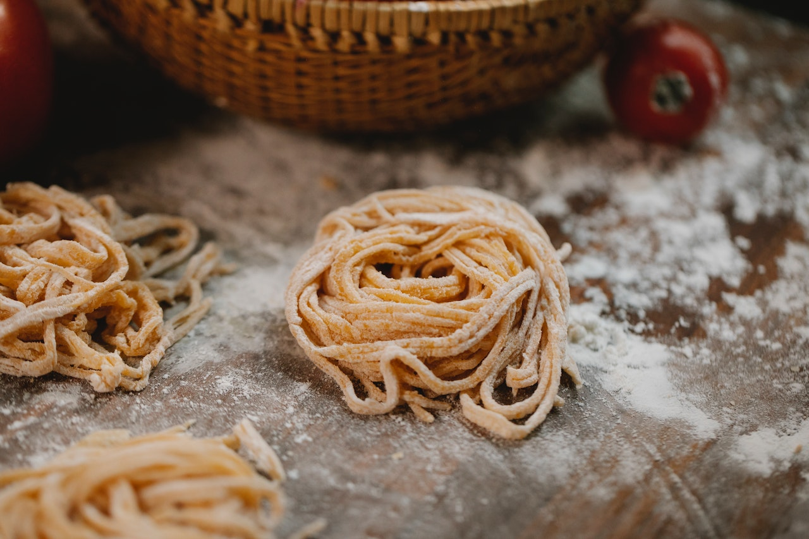

- 200 gramas de farinha de trigo
- 1 colher de chá de sal
- 3 ovos
- 2 colheres de sopa de azeite
- Em um recipiente grande, misture o trigo e o sal.
- Abra um espaço no centro, coloque os ovos e o azeite.
- Com o auxílio de um garfo, mexa os ovos.
- Aos poucos, comece a incorporar a farinha.
- Assim que tudo virar uma massa, amasse bem com as mãos.
- Em uma bancada enfarinhada, disponha a massa e amasse por mais minutos.
- Envolva-a em plástico filme e deixe descansar por cerca de 30 minutos.
- Abra a massa com um rolo em uma superfície lisa.
- Corte o mais fino que conseguir.
- Cozinhe por 4 ou 5 minutos em água fervente com sal, ou até o ponto de sua preferência
- Sirva com o molho que preferir. Bom apetite.